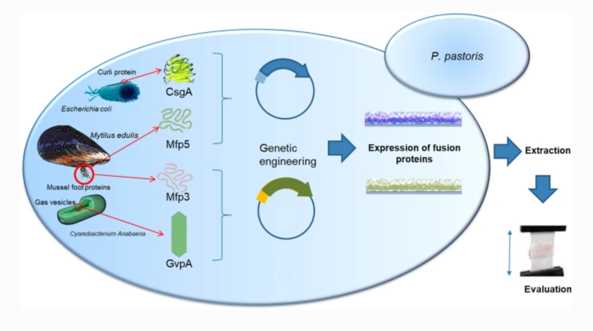

Recombinant Protein Production
MAPs, derived from blue sea mussels, are an exceptional class of adhesive agents due to their remarkable strength, flexibility, and biocompatibility. Thanks to their abundant DOPA residue content, they can easily form a stable film on electrodes, making them ideal for the fast and selective immobilization of glucose oxidase on the electrode's surface. This results in longer enzyme activity in the human body, which is essential for glucose detection. However, the current extraction method for MAPs is neither environmentally friendly nor economically feasible, requiring 10,000 mussels to produce just 1g of MAPs.
To overcome these challenges, Gluessel proposes a method to produce recombinant MAPs that can be used as biomedical adhesives and coatings on continuous glucose monitoring (CGM) devices or other biomedical applications. This innovative approach involves fusion of MAPs and GvpA as well as production of recombinant plasmid in E.coli and co-expression of protein in P.Pastoris.

Mfp5 and Mfp3 are selected from the MAPs group due to their strong adhesive property. The coding sequence of Mfp5-CsgA and Mfp2-GvpA genes will be inserted into E.Coli for recombinant plasmid propagation. GvpA is an amyloid-like fiber and cross-linking protein derived from Dolichospermum flosaquae, a non-pathogenic organism that can sustain high hydrostatic pressure. This protein will play a cohesive role in maintaining the structure of the chimeric protein, ensuring it maintains an acceptable level of stability and toughness for use in wet or humid environments such as the human body. It can possibly improve its adhesion for biomedical applications without any safety concerns.
P. Pastoris will be used for protein expression and post-modification. Gluessel is planning to incorporate a co-expression system that catalyzes the production of DOPA within the host cells. Normally, Unmodified MAPs contain the tyrosine residue that would be post-translationally modified to DOPA. In addition to expression of MAPs in the yeast cells, tyrosinase, enzyme responsible for conversion of tyrosine to DOPA, will also be expressed in P.Pastoris, for modifying the MAPs in vivo and eliminating the need for expensive post-modification processes, thus increasing efficiency and reducing time and cost. P. Pastoris is an ideal host for this approach due to its high growth rate, ease of genetic manipulation, and the ability to perform proper glycosylation of the target protein. It also overcomes the limitations associated with bacterial expression systems, such as intracellular aggregation, misfolding, and degradation of heterologous proteins by proteases.
Overall, this project provides a promising alternative to current MAP extraction methods, offering a sustainable and cost-effective solution for producing MAP-based biomedical adhesives and coatings.